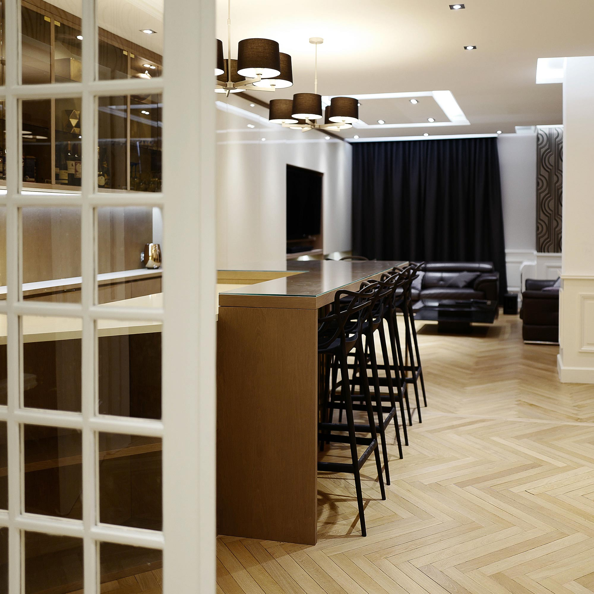
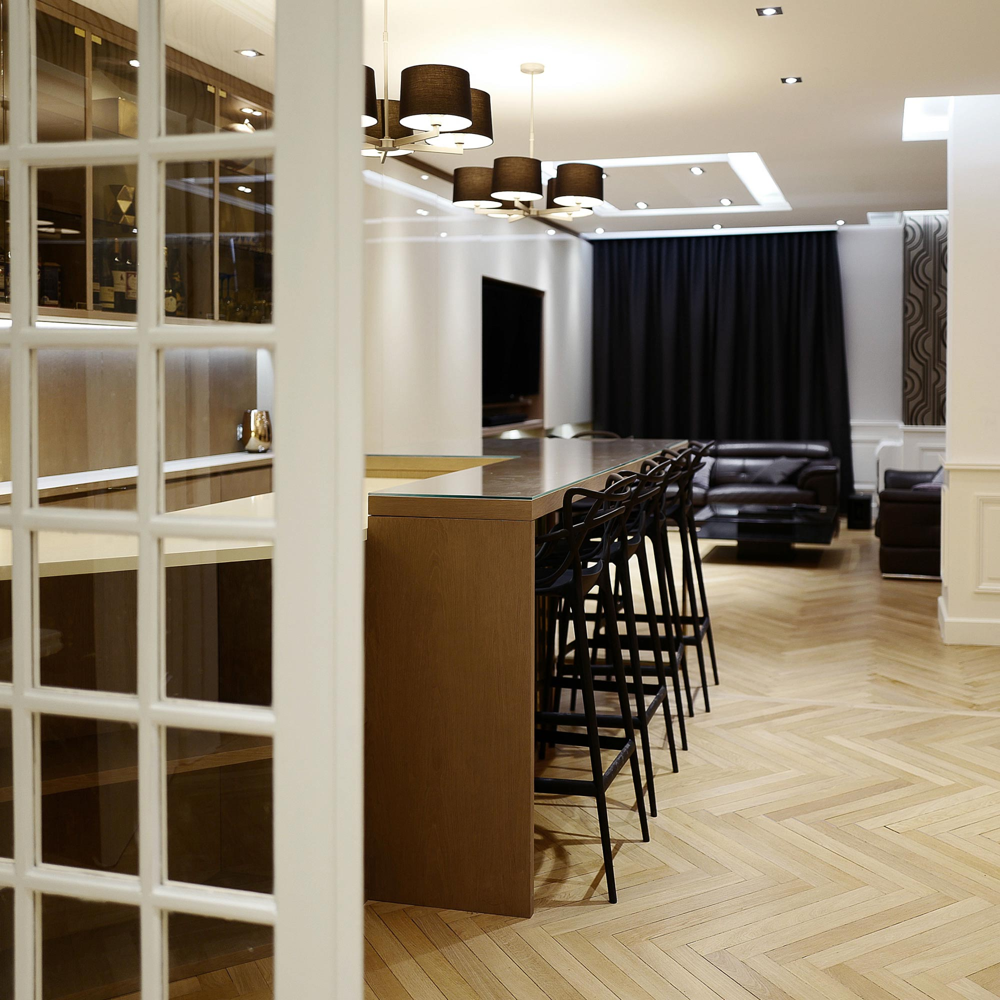

Ce projet est né du souhait du client de transformer la pièce de jour de ce bel appartement
lyonnais. Cet appartement, Art Deco, et de très belle facture, avait été très bien conservé et entretenu par
les anciens propriétaires.
Notre mission était de créer une zone de vie agréable, lumineuse et typée, selon les gouts du
client. Il fallait également intégrer un espace bureau et habiller le poteau porteur afin de
l’intégrer au mieux. Enfin, le client souhaitait un véritable bar.
 

Nous avons premièrement procédé à la démolition des cloisons et à la rénovation du parquet. Ensuite, nous avons proposé un dessin de plafond, en intégrant des décrochés pour intégrer un rétro eclairage, et des corniches, qui étaient inexistantes : de façon à redonner du style et de l’allure à la pièce. Nous avons fait de même en ajoutant des stylobates sur la périphérie du séjour.
Vient ensuite le mobilier sur mesure, représentant le défi de ce projet . Le grand mur du fond
représente 8 mètres linéaires, agencés du sol au plafond.
Ce module intègre d’une part la télévision et les enceintes, du rangement et d’autres part, les
élements pour le bar (rangement et réfrigérateur).
Les matériaux utilisés sont le bois massif, la laque brillante et le verre fumé. Les meubles ont
étés dessinés de façons à intégrer du rétro éclairage. Les pièces en laiton doré amènent un touche plus élégantes et tendue au projet.

Ouvert du Lundi au Samedi
10h-12h / 14h - 18h30
Saverio Bisciglia : 06 09 45 92 45
Roberto Bisciglia : 06 99 14 22 14
Deborah Bisciglia : 06 32 19 57 41